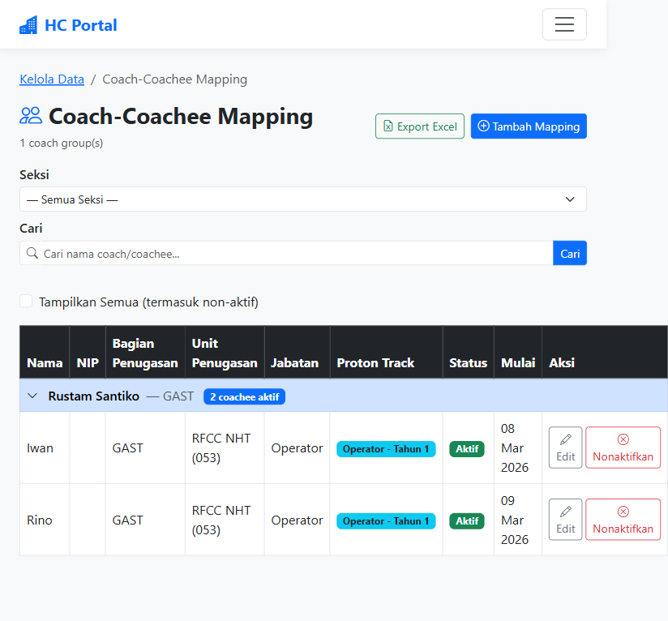
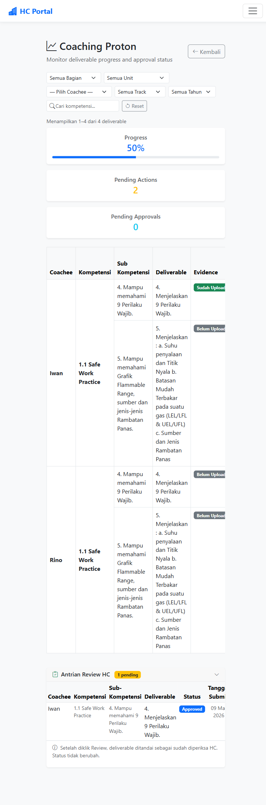
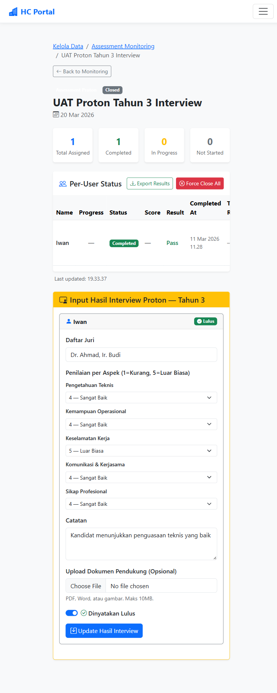
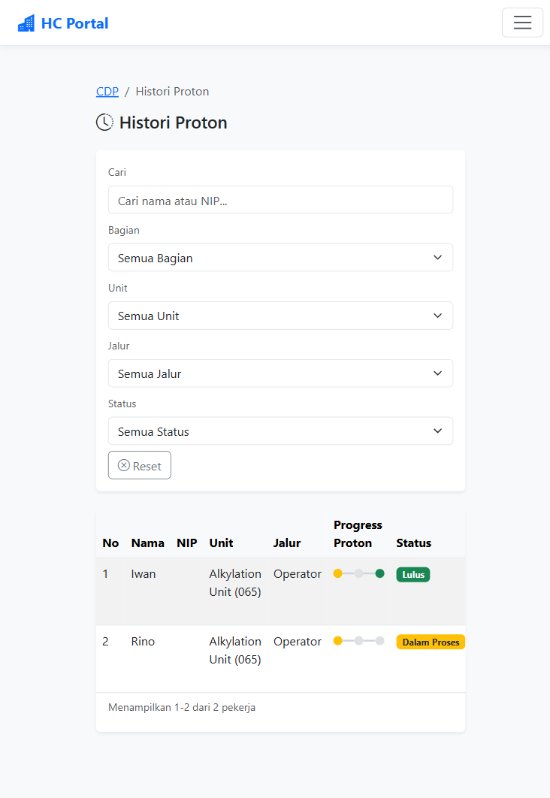
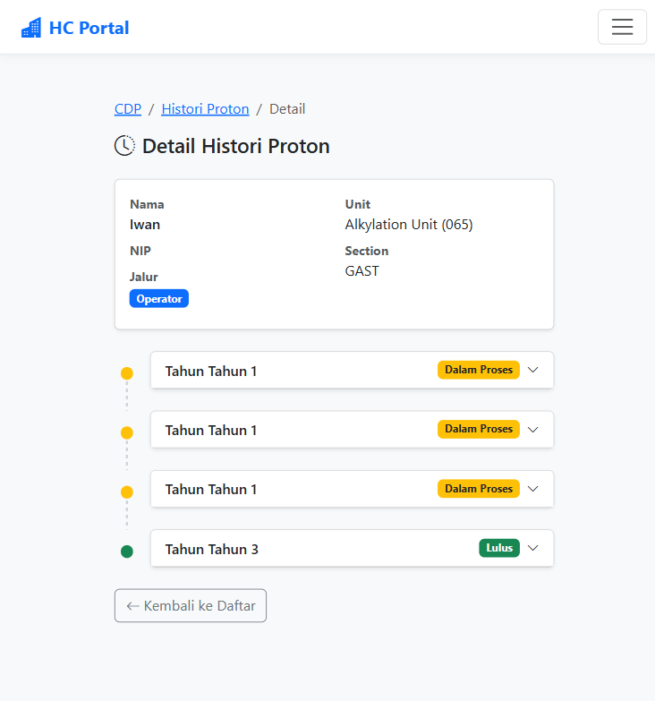
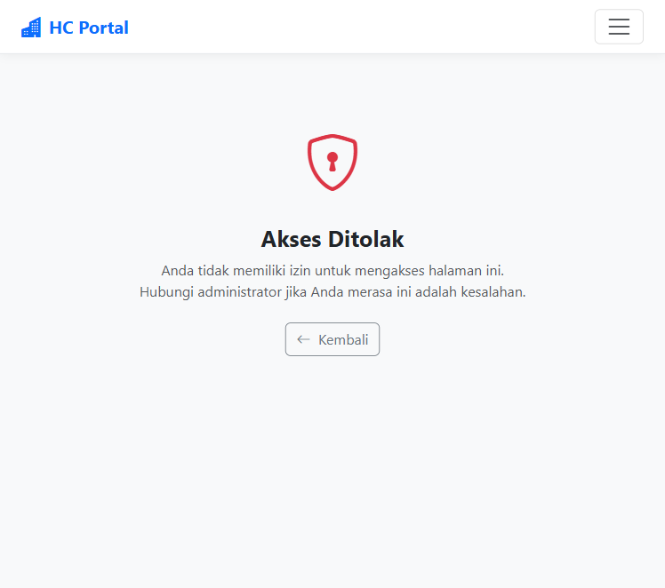

4.6 Authorization — IDOR Protection (Histori Proton)

Gambar 6: Coachee Iwan mencoba akses HistoriProtonDetail user lain — "Akses Ditolak"
Phase 154 melakukan audit keamanan dan perbaikan bug pada modul Coaching Proton. Audit mencakup 7 area requirement (PROTON-01 s/d PROTON-07). Ditemukan 3 security fix dan 1 bug fix yang langsung diperbaiki. Semua perbaikan telah diverifikasi melalui browser testing.
| Metrik | Nilai |
|---|---|
| Total Test Cases | 17 |
| Passed | 17 |
| Failed | 0 |
| Issues Found & Fixed | 4 |
| Requirements Covered | PROTON-01 ~ PROTON-07 |
| Files Modified | CDPController.cs, AdminController.cs |
/CDP/UploadEvidence?progressId=X untuk coachee yang bukan miliknya. Diperbaiki dengan menambahkan validasi CoachCoacheeMappings.
CoachCoacheeMappings.AnyAsync() untuk konsistensi.
HCApprovalStatus != "Pending".
ProtonFinalAssessment, sehingga status "Lulus" tidak muncul di Histori Proton dan dashboard. Diperbaiki dengan menambahkan insert ProtonFinalAssessment setelah interview selesai.
| # | Test Case | Hasil |
|---|---|---|
| 1 | Create Coach-Coachee Mapping | PASS |
| 2 | Coachee Sees Deliverables Immediately | PASS |
| 3 | Mapping Reactivation Restores Deliverables | PASS |
| 4 | Multi-Unit User Mapping | PASS |
| # | Test Case | Hasil |
|---|---|---|
| 5 | Coach Uploads Evidence for Coachee | PASS |
| 6 | Coach Cannot Upload Evidence for Unmapped Coachee (IDOR Fix) | PASS |
| # | Test Case | Hasil |
|---|---|---|
| 7 | Coach Creates Coaching Session | PASS |
| # | Test Case | Hasil |
|---|---|---|
| 8 | SrSpv Sees Only Scoped Deliverables | PASS |
| 9 | SectionHead Rejects Deliverable with Reason | PASS |
| 10 | Worker Cannot Access Approval Endpoints | PASS |
| # | Test Case | Hasil |
|---|---|---|
| 11 | HC Reviews All Coachees (cross-section) | PASS |
| # | Test Case | Hasil |
|---|---|---|
| 12 | Create Assessment Proton — Tahun 1-2 Online | PASS |
| 13 | Create Assessment Proton — Tahun 3 Interview | PASS |
| 14 | Submit Interview Results Creates ProtonFinalAssessment (Bug Fix) | PASS |
| # | Test Case | Hasil |
|---|---|---|
| 15 | Histori Proton Timeline Completeness | PASS |
| 16 | Histori Proton Authorization (IDOR blocked) | PASS |
| 17 | Mapping Endpoint Authorization | PASS |






| Hash | Message |
|---|---|
02897c0 | Security fixes: UploadEvidence IDOR, DownloadEvidence scope, HCReviewFromProgress idempotency |
e95a36b | Bug fix: SubmitInterviewResults now creates ProtonFinalAssessment on pass |
16c10ac | Fix: GetEligibleCoachees returns all assigned coachees for Tahun 3 tracks |
cf9c1ba | UAT complete: 17/17 passed, 0 issues |
— End of Report —
Generated: 11 Maret 2026 | HC Portal KPB